مكونات أجهزة الحاسوب مادية ملموسة
(Hardware)
وغير ملموسة تُسمّى البرمجيات
(Software).
المكونات غير الملموسة لجهاز الحاسوب تُسمّى البرمجيات،
ويجب أن تعمل جميع هذه المكونات معًا في تناغم تام
لتنفيذ التعليمات والأوامر.
تنقسم المكونات المادية في جهاز الحاسوب إلى قسمين رئيسين، هما:
المكونات الداخلية
(Internal Components)،
والمكونات الخارجية، أو ما يُسمّى الملحقات
(Peripherals).
ويؤدي كلّ من هذه المكونات دورًا مهمًّا في تشغيل جهاز الحاسوب
واستخدام برامجه وتطبيقاته.
وضّح المقصود بالمكونات المادية الخارجية لجهاز الحاسوب
(Peripherals).
تعني المكونات خارج الهيكل الرئيس لجهاز الحاسوب،
أو ما يُسمّى وحدة النظام
(System Unit).
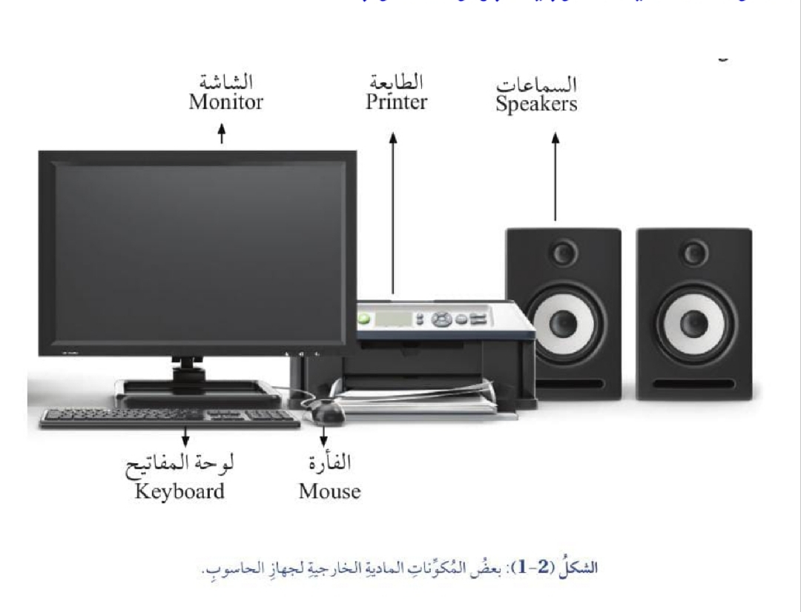
المكونات المادية الخارجية لجهاز الحاسوب
السماعات Speakers.
الطابعة Printer.
الشاشة Monitor.
الفأرة Mouse.
لوحة المفاتيح Keyboard.
أصنّف مكونات الحاسوب الظاهرة في الشكل (2-1) إلى وحدات إدخال ووحدات إخراج.
1. وحدات الإدخال (Input Devices)
من الأمثلة عليها:
لوحة المفاتيح (Keyboard):
تُستعمل هذه اللوحة لإدخال النصوص والأوامر.
الفأرة (Mouse):
تُستعمل الفأرة للتفاعل مع الواجهات الرسومية.
جهاز الماسح الضوئي (Scanner):
يُستعمل هذا الجهاز لتحويل الوثائق الورقية إلى صورة رقمية.
الشاشة (Monitor Screen):
تُستعمل الشاشة لعرض المعلومات بصورة مرئية،
وتقديم واجهات المستخدم.
الطابعة (Printer):
تُستعمل الطابعة لطباعة الوثائق والصور على الورق.
السماعات (Speakers):
تُستعمل السماعات لإخراج الصوت من جهاز الحاسوب.
أمثلة أخرى على وحدات الإدخال ووحدات الإخراج، مثل:
شاشة اللمس (Touch Screen)،
ونظارات الواقع الافتراضي
(Virtual Reality Glasses)،
وأجهزة الاستشعار
(Digital Sensors)،
والقلم الرقمي
(Digital Pen).
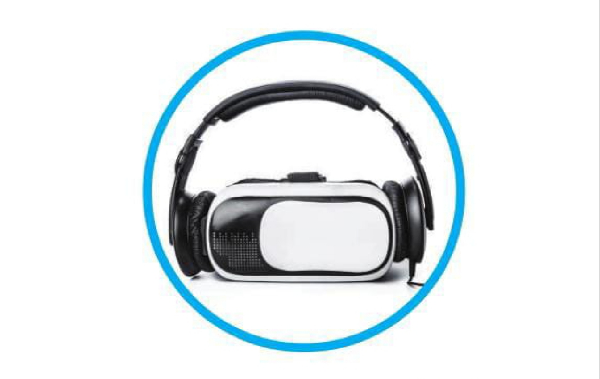
🎬 شاهد الفيديو: المكونات المادية للحاسوب
المكونات المادية الداخلية لجهاز الحاسوب
وضّح المقصود بالمكونات المادية الداخلية لجهاز الحاسوب
(Internal Components).
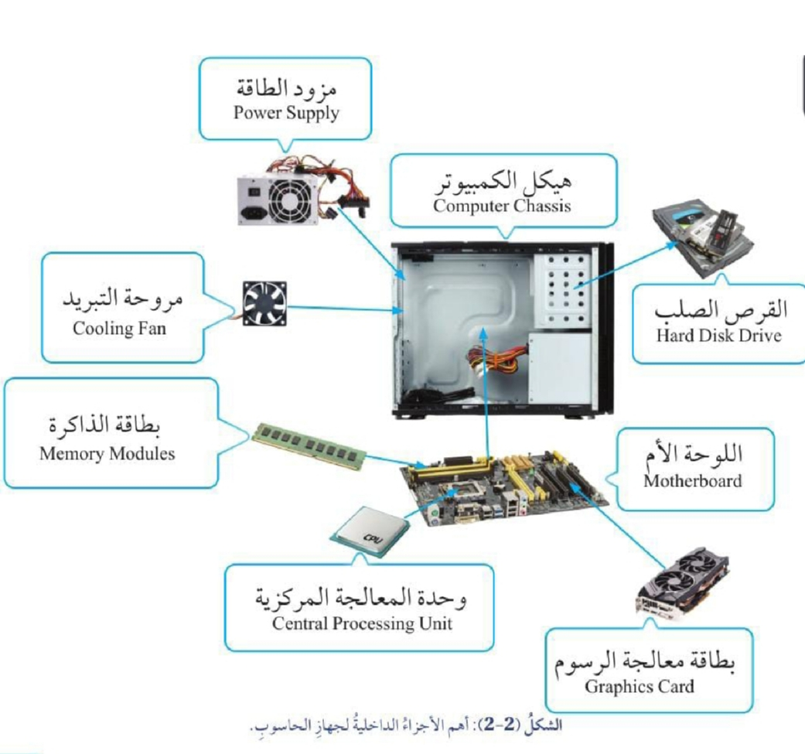
توجد المكونات الداخلية لجهاز الحاسوب داخل وحدة النظام،
وهي تؤدي دورًا مهمًّا في تشغيل الجهاز بكفاءة وفاعلية.
أجزاء الحاسوب الداخلية
القرص الصلب Hard Disk Drive.
اللوحة الأم Motherboard.
هيكل الحاسوب Computer Chassis.
وحدة المعالجة المركزية CPU.
مزود الطاقة Power Supply.
بطاقة معالجة الرسوم Graphics Card.
وحدات الذاكرة Memory Modules.
مروحة التبريد Cooling Fan.
🎬 شاهد الفيديو الثاني
وضّح المقصود بهيكل الحاسوب
(Computer Chassis).
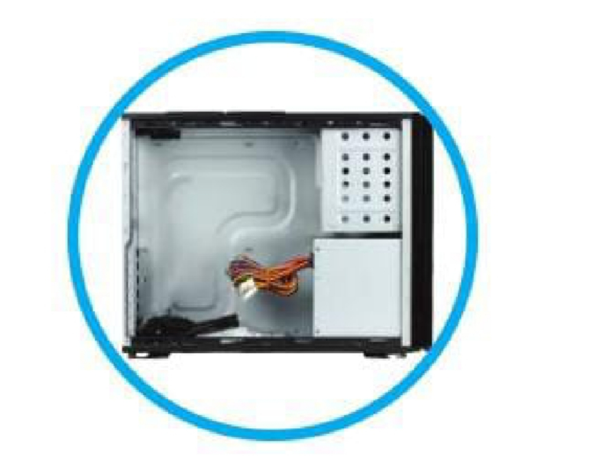
وظيفة هيكل الحاسوب (Computer Chassis):
هيكل معدني يحوي المكونات الداخلية لجهاز الحاسوب،
واللوحة الأم ومحتوياتها، والقرص الصلب، ومزود الطاقة.
تتم فيه عملية المعالجة، وهو ذو أشكال وحجوم مختلفة.
وضّح المقصود باللوحة الأم
(Motherboard).
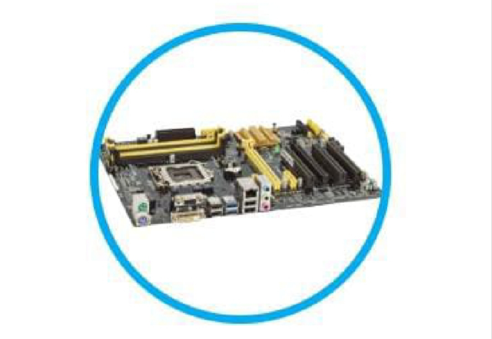
وظيفة اللوحة الأم (Motherboard):
تُمثّل هذه اللوحة الوحدة الأساسية في جهاز الحاسوب،
وتُثبّت عليها مكونات الحاسوب الداخلية، وهي تربط بين جميع
مكونات جهاز الحاسوب والأجهزة الطرفية، وتوفّر وسائط الاتصال
فيما بينها (المعالج، والذاكرة، وبطاقة الرسوم)، إضافة إلى
عدد من الشرائح الإلكترونية.
اذكر بعض الأجزاء التي تُثبّت على اللوحة الأم.
المعالج والذاكرة وبطاقة الرسوم.
وضّح المقصود بوحدة المعالجة المركزية
(CPU).
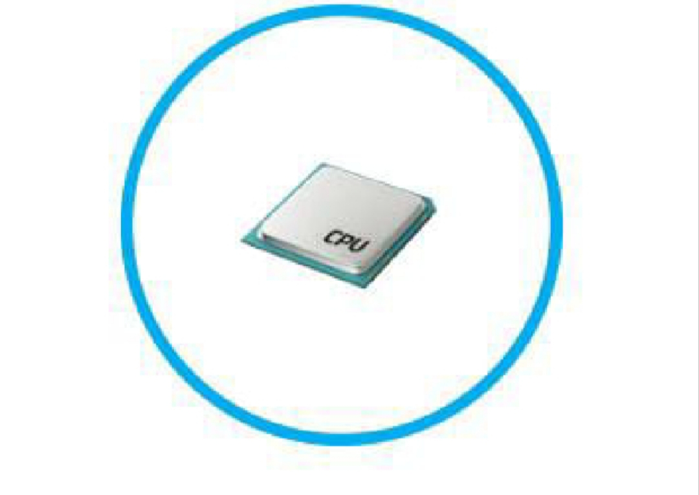
وظيفة وحدة المعالجة المركزية (CPU):
تُعدّ هذه الوحدة دماغ جهاز الحاسوب، وتتولى تنفيذ العمليات
الحسابية والمنطقية، وكذلك عمليات الإدخال والإخراج،
وجميع العمليات التي تصل من نظام التشغيل.
ما مميزات وحدة المعالجة المركزية؟
تمتاز وحدة المعالجة المركزية بتعدد أنواعها واختلاف سرعاتها
تبعًا لطبيعة المهام التي يُراد تنفيذها.
وضّح المقصود بالذاكرة الرئيسية
(Main Memory).
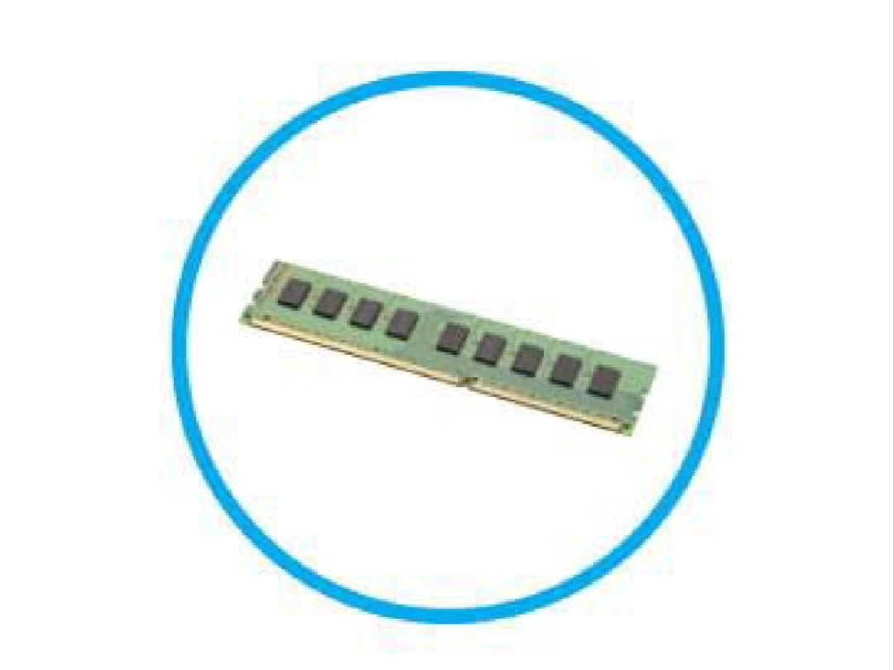
أهمية الذاكرة الرئيسية (Main Memory):
تعمل الذاكرة الرئيسية على تخزين البيانات والمعلومات
داخل جهاز الحاسوب.
أقسام الذاكرة الرئيسية
ذاكرة الوصول العشوائي (RAM).
ذاكرة القراءة فقط (ROM).
وضّح المقصود بذاكرة الوصول العشوائي
(RAM).
ذاكرة تخزين قصيرة المدى، وهي تُستخدم في تخزين البيانات
المؤقتة التي يحتاج إليها جهاز الحاسوب أثناء استعمال التطبيقات،
وتُعدّ ذاكرة رئيسية فيه.
ما العلاقة بين سرعة جهاز الحاسوب وذاكرة RAM؟
فكلما كان حجم الذاكرة كبيرًا زادت سرعة جهاز الحاسوب
في تنفيذ العمليات المطلوبة، والعكس صحيح.
وضّح المقصود بذاكرة القراءة فقط
(ROM).
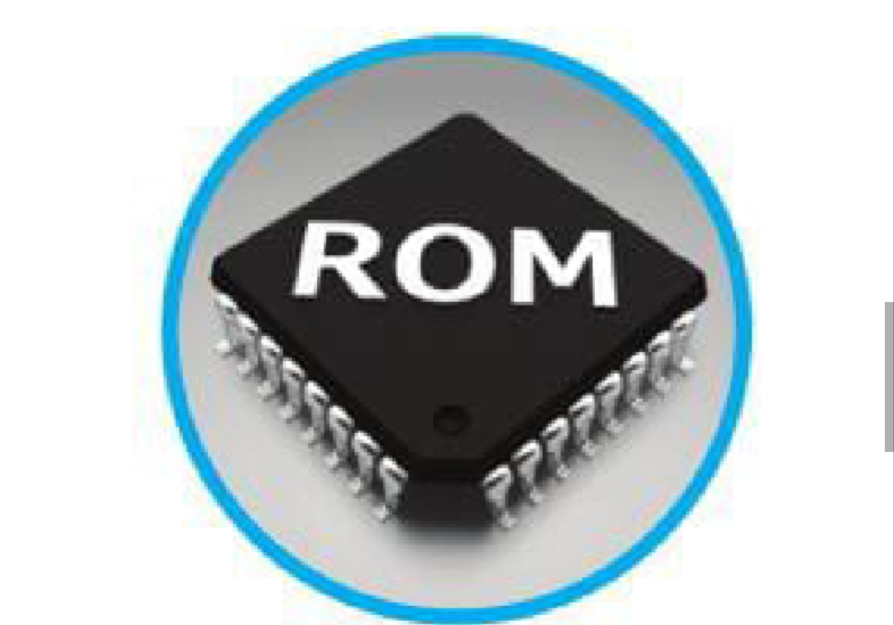
تُستخدم هذه الذاكرة في تخزين البيانات الأساسية لتشغيل
جهاز الحاسوب ونظام التشغيل بصورة دائمة.
BIOS:Basic Input/Output System
ما الفرق بين RAM وROM؟
وجه المقارنة
RAM
ROM
الكتابة
يُكتب عليها أكثر من مرة
للقراءة فقط، ويُكتب عليها مرة واحدة
المدة
قصيرة المدى
طويلة المدى
البيانات
البيانات التي يحتاج إليها جهاز الحاسوب في التطبيقات
البيانات الأساسية لتشغيل جهاز الحاسوب
وضّح المقصود بالقرص الصلب
(HDD).
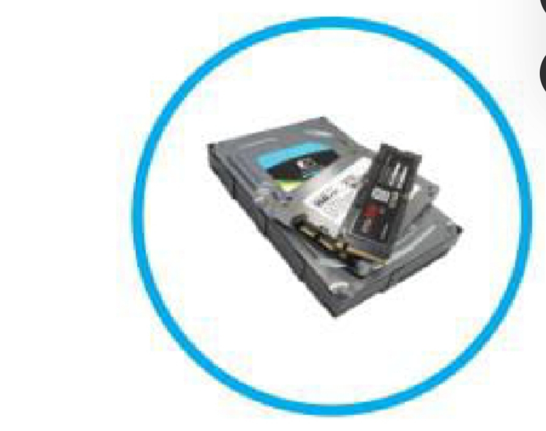
وظيفة القرص الصلب (HDD):
وحدة تخزين طويلة المدى، وفيها تُخزّن البيانات والمعلومات
التي تمت معالجتها أو يُراد الرجوع إليها ومعالجتها.
ما مميزات القرص الصلب (HDD)؟
يمتاز بتعدد أنواعه واختلاف سعات تخزينه، ويُعدّ جزءًا رئيسًا
في جهاز الحاسوب لحفظ البيانات.
ما وظيفة بطاقة معالجة الرسوم / بطاقة الشاشة (GPU)؟
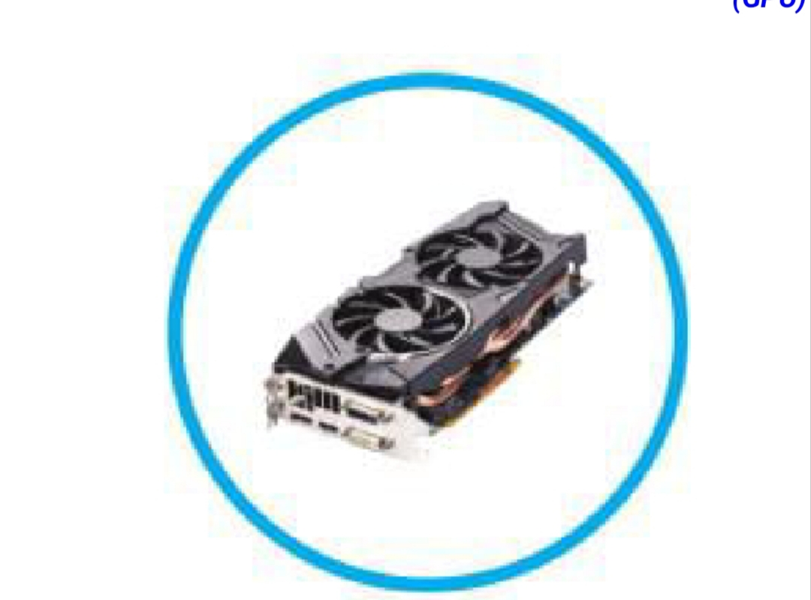
تتمثل وظيفة هذه البطاقة في معالجة الرسوم وعرض الصور
ومقاطع الفيديو على الشاشة، وهي تكون إما مدمجة في اللوحة الأم،
وإما بطاقة منفصلة.
ما العلاقة بين GPU وجودة الصورة المعروضة على الشاشة؟
فكلما زادت قدرة البطاقة كانت جودة الصورة المعروضة على الشاشة أفضل.
وضّح المقصود بمزود الطاقة
(Power Supply).
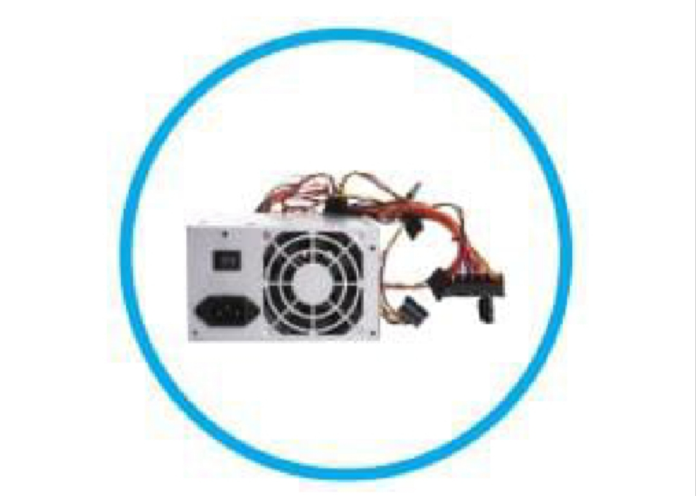
آلية / مبدأ / وظيفة مزود الطاقة:
يعمل هذا الجزء على توفير الطاقة الكهربائية اللازمة لتشغيل
جهاز الحاسوب، وذلك بتغذية الأجزاء الداخلية (اللوحة الأم،
والقرص الصلب، وقارئ الأقراص المدمجة) عن طريق كابلات
تُوزّع بحسب القدرات اللازمة لعمل جهاز الحاسوب.
ومن الجدير بالذكر أن مزود الطاقة يتصل مباشرة بالتيار الكهربائي.
وضّح المقصود بمروحة التبريد
(Cooling Fan).
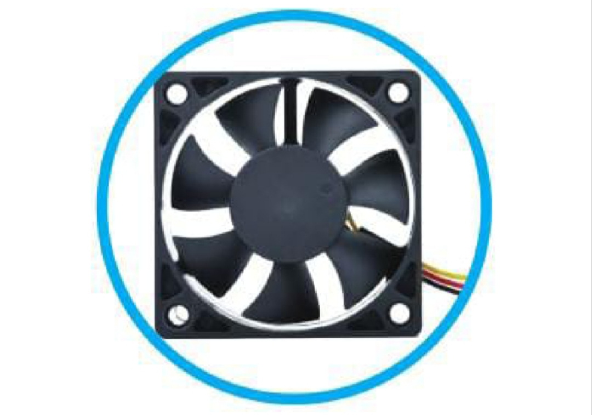
وظيفة مروحة التبريد (Cooling Fan):
توجد مروحة التبريد داخل هيكل جهاز الحاسوب،
وتُستخدم في تبريد مكونات الحاسوب الداخلية، مثل:
وحدة المعالجة المركزية، وبطاقة الرسوم، وغير ذلك.
علّل: تقوم مروحة التبريد بتبريد مكونات الحاسوب الداخلية.
تجنبًا لزيادة درجات الحرارة التي قد تؤدي إلى تلف المكونات
الداخلية، أو تقليل العمر الافتراضي لجهاز الحاسوب.
علّل: يُعدّ التكامل الوظيفي بين الأجزاء الداخلية والأجزاء
الخارجية مهمًّا لعمل نظام الحاسوب بفاعلية.
ونتيجةً لهذا التكامل؛ فإن جميع المكونات تعمل معًا بانسجام
وتناغم، تحقيقًا لأهداف تعزيز أداء المهام المطلوبة.
أعطِ مثالًا على تكامل وظيفي بين أجزاء الحاسوب الداخلية والخارجية.
فمثلًا، عند الكتابة باستخدام لوحة المفاتيح (من وحدات الإدخال)،
يستقبل المعالج (CPU) المدخلات (Inputs)، وتُخزّن على وحدات
التخزين الرئيسية، وتُرسل المخرجات (Outputs) إلى الشاشة
(وحدة الإخراج) لعرض الحروف التي كُتبت.
ونتيجةً لهذا التكامل؛ فإن جميع المكونات تعمل معًا بانسجام
وتناغم، تحقيقًا لأهداف تعزيز أداء المهام المطلوبة.
إضاءة: مشروع إعادة تدوير أجهزة الحاسوب
تحقيقًا لأهداف تعزيز الاستدامة، عملت وزارة البيئة
على إعادة تدوير النفايات الإلكترونية؛ بغية الحد من آثارها
الضارة بالبيئة والمحافظة على الموارد البيئية،
وتشجيع الابتكار والإبداع.
ومن ثم، فقد حرصت الوزارة على تدوير الأجهزة التالفة،
بما في ذلك أجهزة الحاسوب ومكوناتها.